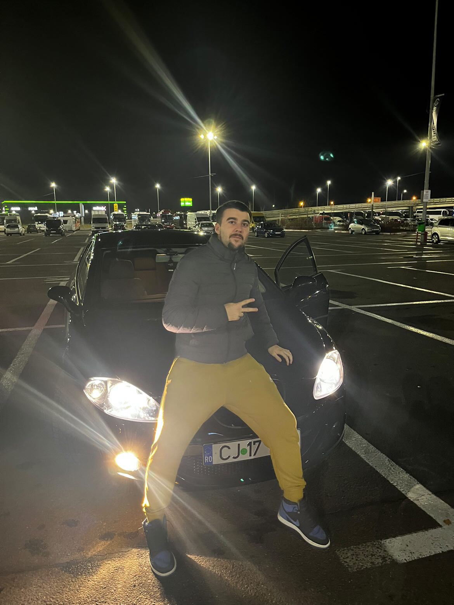

Cluj: Un șofer teribilist face ravagii cu noul său bolid de curse, cumpărat chiar de el
Scris de Ziua de Cluj | 09 Iunie 2025, 20:11 | Eveniment

Foto: Facebook / Info Trafic Jud. Cluj
Un șofer teribilist face ravagii cu noul său bolid de curse, cumpărat chiar de el. Tânărul recunoaște că este un mare pasionat de mașini și că îi place adrenalina și senzațiile tari.
Autoritățile reamintesc șoferilor să conducă responsabil și să respecte regulile de circulație pentru siguranța tuturor participanților la trafic.